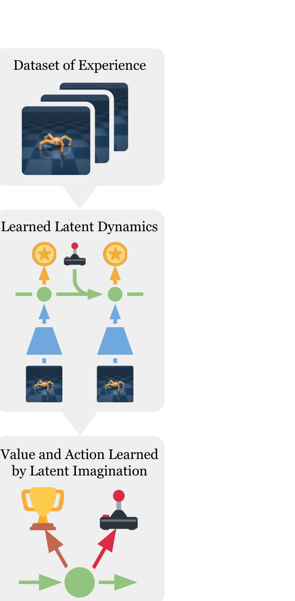
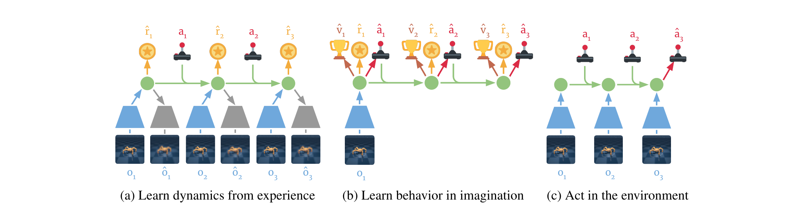
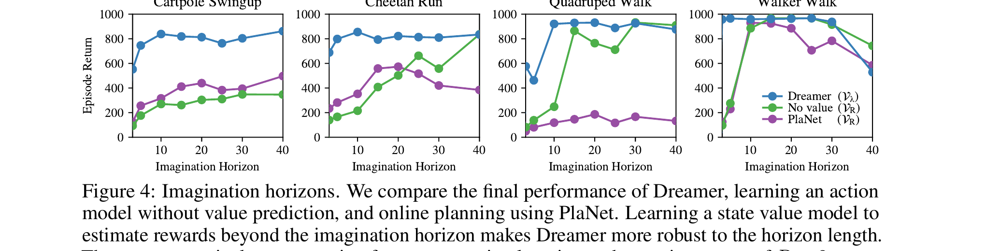
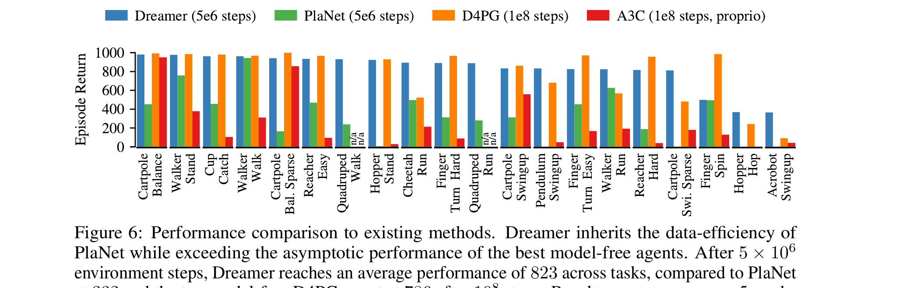

Dream to Control: Learning Behaviors by Latent Imagination
Hafner, Lillicrap, Ba, Norouzi · Toronto / DeepMind / Google Brain · ICLR 2020 · arXiv 1912.01603
Dreamer 是世界模型谱系（World Models → PlaNet → Dreamer → DreamerV2/V3）里 "把训练完全搬进想象里"的关键一步。它的前身 PlaNet 已经能从像素学一个紧凑的 latent 动力学， 但用法是每一步在线 CEM 规划——慢、视野短、还得手动调规划 horizon。 Dreamer 把规划换成actor-critic：在 latent 空间里推 H 步想象、用 value model 估算 horizon 之外的回报、 把 value 的梯度沿着可微动力学一路反传回 actor。 这一脚下去就同时拿到了：① 模型自由（model-free）方法的最终性能； ② 模型为本（model-based）方法的样本效率；③ 短想象 horizon 也不再短视。
阅读路径：先 §1 看清楚它为啥重要 → §2 把世界模型的"骨架"搭起来（核心是 Fig 3 那三幅图）→ §3 是论文真正的贡献（怎么在梦里学 policy + value）→ §4 representation 是 plug-in，三种都试过了 → §5 实验 → §6 把它放回 embodied AI / VLA 大图里。
§1 一句话定位
先把"它和别人都不一样的那一句话"锁住——后面所有章节都是在展开这一句。
Dreamer 是一个从图像学控制的强化学习智能体。它先学一个compact latent dynamics， 然后纯粹靠在 latent 空间里"做梦"（rollout）来学行为—— 通过把学到的 value 估计沿着可微神经动力学反传梯度， 得到 long-horizon 的 action。20 个 DeepMind Control Suite 视觉任务上， Dreamer 在样本效率、训练时长、最终性能三项全部领先现有 model-based / model-free 方法。
展开原文 · Abstract 核心句
"We present Dreamer, a reinforcement learning agent that solves long-horizon tasks from images purely by latent imagination. We efficiently learn behaviors by propagating analytic gradients of learned state values back through trajectories imagined in the compact state space of a learned world model."

人类高手下棋时不会真把棋子推过去试，而是在脑子里"想象棋盘 5-10 步"， 脑里那盘棋每一步还会估个"局势分"，反过来指导现在该走哪。 Dreamer 做的就是这件事的可微版本——latent 空间里 rollout = 在脑里推棋， value model = 局势分，关键是这条想象链每个环节都是神经网络， 所以可以把"局势分变化"沿着推演链解析地求导， 告诉 actor "把第 1 步往左挪一点点，最终局势分会涨多少"。 这是 model-free RL 做不到的——它们只能用 noisy Monte Carlo 估计 + REINFORCE 类方差爆炸的梯度。
把 Dreamer 放进光谱里看一下：
- World Models (Ha & Schmidhuber, 2018)：先无监督学 VAE+RNN 的世界模型，再 evolutionary search 一个 controller。两阶段、不端到端。
- PlaNet (Hafner, 2018)：同一组人。学 RSSM 后用 online CEM 在 latent 空间规划。性能不错，但每步慢、horizon 受限。
- Dreamer（本文）：策略也搬进 latent 空间，靠想象训。这是从"规划派"到"想象派"的拐点。
- DreamerV2/V3 (2021/2023)：换离散 latent + 一组 hyperparams 通吃多个域，到 V3 直接通关 Minecraft 钻石。
- JEPA / V-JEPA / LeCun WM：换思路——不让世界模型重建 pixel，让它在表示空间预测未来。但"用 value 沿动力学反传训 policy"的 Dreamer 思路依然适用。
§2 世界模型：在哪里"做梦"
§1 反复用了 "latent space" / "imagine" / "world model" 三个词，但还没说清楚它们到底是哪几个神经网络。 这一节把世界模型拆成3 个分布 + 1 个 RSSM 骨架，然后用 Fig 3 把 "如何收集数据 / 如何学 policy / 如何在真环境跑"拼回来。 读完这一节你应该能回答：Dreamer 在每一步 update 里到底前向了哪些网络、loss 是什么。
2.1 POMDP 设定 · 三件事
论文把视觉控制建模成一个 POMDP： 离散时间步 $t \in [1; T]$，每一步发生三件事。
| 事件 | 在 Dreamer 里对应 |
① agent 给出 action $a_t \sim p(a_t \mid o_{\le t}, a_{| action model |
q_φ(a_t | s_t)（learned policy） |
② 环境返回 observation + reward $o_t, r_t \sim p(o_t, r_t \mid o_{| 真实环境（在想象里换成世界模型预测） |
|
| ③ 目标是最大化 $\mathbb{E}_p\!\left[\sum_{t=1}^{T} r_t\right]$ | 实际算的是 imagined 期望折扣回报（§3 给公式） |
展开原文 · POMDP 形式化
"We formulate visual control as a partially observable Markov decision process (POMDP) with discrete time step $t \in [1; T]$, continuous vector-valued actions $a_t \sim p(a_t \mid o_{\le t}, a_{
2.2 三个学出来的模型
上一段讲了什么是"环境"。现在替换它——把环境的 transition 和 reward 都用神经网络学出来， 这个由 3 个分布拼出来的东西就是 Dreamer 的世界模型：
- $p_\theta(s_t \mid s_{t-1}, a_{t-1}, o_t)$
- Representation model——"看到当前 observation 后，更新 latent 信念"。用 $p$ 表示因为它从真环境采样（看了真 $o_t$）。在 RSSM 里它是 GRU + CNN encoder。
- $q_\theta(s_t \mid s_{t-1}, a_{t-1})$
- Transition model——"不看图也能预测下一步 latent"。这是想象阶段唯一靠的东西，论文反复强调它不需要 observation，所以可以在 latent 里成千上万条并行 rollout。
- $q_\theta(r_t \mid s_t)$
- Reward model——"从 latent 直接预测当前奖励"。这是 RL signal 进入想象的唯一通道。
- $\theta$
- 三个网络共享一组参数（说"组"是因为它们当然是不同的层，但训练时一起优化同一个目标，§4 给具体 loss）。
- $p$ vs $q$ 的约定
- 论文用 $p$ 标"在真环境里能采样的真分布"，$q$ 标"做近似 / 想象用的"。这个区分在 §4 的 ELBO loss 里很关键。
如果你想让 agent 在 latent 空间里独立 rollout 而不再看图——你需要： (1) 怎么从图变 latent（representation）→ (2) 没图时怎么继续往前推 latent（transition）→ (3) 在每个 latent 上能拿到 reward（reward）。 少一个都跑不动。这就是为什么不需要 observation/decoder——它只用于训练时提供监督，§4 会讲。
2.3 Fig 3 · 三阶段拼起来怎么跑
§2.2 给的是世界模型的"零件"。把它们和 actor / value 拼回去，得到 Dreamer 的三阶段循环。 这是全文最关键的一张图，下面用热点逐块讲。

第 1 步 · 取真实经验 batch
从 dataset $\mathcal{D}$ 抽 $B$ 个长度 $L$ 的真实序列 $\{(a_t, o_t, r_t)\}$。这是 (a) 左下排的清晰 $o_1, o_2, o_3$。
第 2 步 · encode 出真实 latent 序列
沿时间用 representation model $p_\theta(s_t | s_{t-1}, a_{t-1}, o_t)$ 算出 model state $s_1, ..., s_L$。CNN encoder + GRU 一起跑。
第 3 步 · 训世界模型 · update θ
用 reconstruction loss（让 ô ≈ o）+ reward loss（让 r̂ ≈ r）+ KL 正则（让 q(s|s,a) 接近 p(s|s,a,o)），一起反传更新 θ。Fig 3a 就是这一步。
第 4 步 · 在每个 s_τ 上 rollout H 步想象
对每个真实 latent $s_t$，从这里出发用transition model + action model纯想象向前 $H$ 步（论文 H=15）。整段不看图。Fig 3b 就是这条 rollout。
第 5 步 · 算 V_λ 并更新 actor / value
沿想象链每步算 $\hat r_\tau$ 和 $v_\psi(s_\tau)$，组合成 V_λ（§3.2 公式）。actor 上升 $\nabla_\phi \sum V_\lambda$（解析梯度沿动力学反传），value 下降 $\|v_\psi - V_\lambda\|^2$ 回归 target。
第 6 步 · 用 actor 在真环境采新数据
初始化 $o_1$，每步用 representation 更新 latent，action model 出 $a_t$，加 exploration noise 后 step env，把新轨迹加进 $\mathcal{D}$。回到第 1 步。
"latent imagination" 不是部署时做的事，是训练时做的事。 部署阶段（Fig 3c）没有想象 rollout——agent 看到一帧就编码一帧， 直接用 action model 出动作。想象只在 (b) 训练时发生，目的是给 actor / value 提供训练信号。 如果你和 MPC / online planning（如 PlaNet 部署时还在 plan）混淆了，会觉得 Dreamer 部署很慢——其实它部署时极快， 因为只走一遍 encoder + actor。
2.4 RSSM · Markov 性 + 循环骨架
论文一句话带过 transition 模型用 RSSM， 实际上这是 PlaNet 的产物（Hafner 2018），值得单独说一下——因为它解释了 "latent state s_t 为什么能 Markov"这个看起来反直觉的事。
展开原文 · 为什么 Markov
"Dreamer uses a latent dynamics model that consists of three components. The representation model encodes observations and actions to create continuous vector-valued model states $s_t$ with Markovian transitions."
关键技巧：RSSM 把 latent 拆成两部分：
所谓"Markov" 是说 $s_t = (h_t, z_t)$ 这个组合状态已经吸收了所有相关历史—— 从它推 $s_{t+1}$ 不再需要原始 obs。这是后面能在 latent 空间纯粹想象的理论前提。 论文用一行话挂了 "non-linear Kalman filter / HMM with real-valued states" 的类比： $h_t$ 像 Kalman 的均值传播，$z_t$ 像协方差通道。
$h_t$ 是 GRU——保证有一条干净的时间线性递推；$z_t$ 是 VAE 的潜变量——保证表示有足够随机性容纳建模不确定。 "为什么不能只用 GRU？"——因为纯 deterministic 拟合会 overfit 到看到的轨迹，generation 时差。"为什么不能只用 VAE？"——纯 stochastic 没记忆。两个互补。
§3 在梦里学策略
§2 把"梦境"造好了——可以在 latent 空间里任意 rollout。但怎么用这场梦训出一个好的 policy？ 朴素办法：rollout 一段、把 reward 加起来、当 policy gradient 的 return。但这又落回 model-free 的老坑—— 视野只能到 horizon H 步，H 之外的 reward 全丢了；想增大 H 就指数增加方差。 §3 是论文真正的贡献，三步走：① 用 value model 把 horizon 之外的 reward 救回来 → ② 用解析梯度沿可微动力学反传，干掉高方差 → ③ actor / value 联合优化。
3.1 为什么需要 actor-critic（不是仅仅 imagined return）
一个 imagined trajectory 只有 $H$ 步（论文 $H=15$），但 episode 可能上千步。如果 actor 只对"前 H 步 imagined reward 之和"求导：
- 遇到 sparse reward 任务，前 15 步可能什么都没发生，actor 学不到东西；
- 就算 reward 不稀疏，也只能学到"短视"的 policy（Hopper 跳一步而不规划落地）；
- 想加大 H 就三次方递增计算和方差。
Dreamer 的做法：在 imagined trajectory 末端挂一个 value model把 horizon 之外的 reward 用一个标量收回来。 这就是经典 actor-critic 的招——但配合可微 world model 还能再升级（§3.3）。
3.2 三种 value 估计 · V_R / V_N^k / V_λ
论文给了三种 imagined return 的估计方式（Eq. 4/5/6），偏差—方差权衡逐级提升：
- 含义
- 从 $s_\tau$ 起在想象里走到 horizon 末端，把 imagined reward 直接相加。不用 value model。
- 问题
- horizon 之外完全丢失。这是 "No value" ablation 用的版本（Fig 4 绿线）。
- $\sum \gamma^{n-\tau} r_n$
- 前 $k$ 步用 imagined reward 折扣相加（短期信号准）。
- $\gamma^{h-\tau} v_\psi(s_h)$
- 第 $k$ 步起挂上 value model把 horizon 后面的 reward 收尾——避免视野丢失。
- $h = \min(\tau+k, t+H)$
- 遇到 horizon 边界就停（防止越界），其他时候用 $\tau+k$。
- 权衡
- $k$ 越大越接近 $V_R$（偏差小但方差大）；$k$ 越小越靠 value model（方差小但偏差大）。
- 本质
- 把不同 $k$ 的 V_N^k 用 $\lambda$ 加权平均——既不全偏向 reward 也不全偏向 value，而是按 $\lambda$ 平滑插值。
- $\lambda \to 0$
- 退化成 1-step return（全靠 value），偏差最大、方差最小。
- $\lambda \to 1$
- 退化成 Monte Carlo（全靠 imagined reward），偏差最小、方差最大。
- 论文取值
- 实验里用 $\lambda = 0.95$（细节在 Appendix A），靠近 MC 端但留一手 value。
- 家族传承
- 这就是 Schulman 2015 的 GAE 公式，搬到 imagined trajectory 上。Sutton 1988 的 TD(λ) 也是这个套路。
3.3 关键武器 · 解析梯度反传
§3.2 给的 V_λ 怎么对 actor 参数 $\phi$ 求导？这才是 Dreamer 拉开和 model-free / 早期 model-based 的真正距离。
一条想象 trajectory 长这样：
整条链上：① action 用 reparameterized sampling（Eq. 3，$a_\tau = \tanh(\mu_\phi(s_\tau) + \sigma_\phi(s_\tau)\epsilon)$）所以对 $\phi$ 可微； ② transition / reward / value 都是 NN 所以对 $\phi$ 可微（通过 $s$ 间接）。 于是：
- 对比 model-free actor-critic
- A3C/PPO/SAC 用 REINFORCE 或 reparameterized Q 学一步——只能反传 1 步。Dreamer 反传整条 H 步链 + 末端 value。
- 对比 derivative-free model-based
- PETS/POPLIN/PlaNet 用 CEM 在 latent 里黑箱搜——不利用神经网络可微性，每一步要重新 search。
- 对比 Q-learning + multi-step
- MVE/STEVE 用 multi-step Q target 但只对 1-step Q 梯度——没把动力学的梯度纳入。
- 本质收益
- 把"动作怎么改 → reward / value 怎么变"这条链显式地、解析地告诉 actor，方差比 REINFORCE 低几个数量级。
展开原文 · 解析梯度的论点
"In comparison to actor critic algorithms that learn online or by experience replay (Lillicrap et al., 2015; ...), world models can interpolate past experience and offer analytic gradients of multi-step returns for efficient policy optimization."
REINFORCE / CEM 像解释器：每一步盲采、看结果再回头猜该往哪。 Dreamer 的解析梯度像编译器：整段程序（H 步 rollout + value）一次性符号微分， 告诉你"参数改 0.001 → 总回报涨 0.7"，没有蒙特卡洛噪声。当然代价是要求 world model 可微——这正是为什么需要 latent dynamics。
3.4 Actor / Value 学习目标
把 §3.2 的 $V_\lambda$ 和 §3.3 的可微链拼起来，就得到论文 Eq. 7/8：
- actor $\phi$ 上升
- 把 $V_\lambda$ 当回报来 maximize，梯度沿 transition / reward / value 一路反传。
- value $\psi$ 下降
- 典型 TD：$V_\lambda$ 上 stop-gradient当 target，让 $v_\psi$ 拟合它。否则会自我塌缩。
- world model 怎么办
- "The world model is fixed while learning behaviors"——actor/value 这一轮 update 时 $\theta$ 冻住。$\theta$ 在 (a) 那一轮单独更新（dynamics learning step）。
- discrete action 怎么办
- continuous actions + latent state 用 reparameterization；discrete actions 用 straight-through estimator（Bengio 2013）。
- early termination
- 有终止的任务额外预测 discount factor，乘进 Eq. 7/8 sum 里——避免 imagine 越过 episode 边界。
3.5 Fig 4 · 为什么 value model 让 horizon 不再敏感
§3.1 讲的是动机（短视），§3.2-3.4 讲的是方法。Fig 4 是实证： 把 $V_\lambda$（Dreamer，蓝） vs $V_R$（"No value"，绿） vs PlaNet 在线规划（紫）四个任务画在一起。

它不是说"Dreamer 总比对手强"——是说带不带 value 决定了你需不需要扛 long horizon。 如果 H=10 就够了，rollout 计算少 4 倍、方差小一个数量级。 后面 DreamerV2/V3 把 H 设得更短也能 work，根源就在这。
§4 representation 怎么学
§3 讲了"如果世界模型已经学好了"怎么用它训 policy。但 §2 那三个分布具体的训练目标是什么？ 论文给了三种可选 representation 学法，§5 实验里都试过——结果是 pixel reconstruction 最强， contrastive 次之、reward-only 最弱。这一节把三个目标的 loss 公式分别讲清楚。
4.1 三种可选目标对比
| 名字 | 额外网络 | 训练信号 | 实验表现 |
| Reward only | 无 | 只让 reward model 拟合 r | 大部分任务过不去（Fig 8 紫线） |
| Reconstruction | + observation decoder $q(o_t|s_t)$ | ELBO（recon + reward + KL） | 主力，多数任务最优（Fig 8 蓝） |
| Contrastive (NCE) | + state model $q(s_t|o_t)$ | NCE 上界（reward + state + KL） | ~50% 任务可比，剩下落后（Fig 8 绿） |
4.2 Pixel reconstruction · ELBO（默认）
Dreamer 默认用的就是 PlaNet 的世界模型。这是一个 sequential VAE，目标是 ELBO（也就是 VIB）：
- $\mathcal{J}_O^t \doteq \ln q(o_t \mid s_t)$
- Observation likelihood——decoder 用 $s_t$ 重建 $o_t$ 的高斯/伯努利对数似然，对应 Fig 3a 那个灰色 transposed CNN。
- $\mathcal{J}_R^t \doteq \ln q(r_t \mid s_t)$
- Reward likelihood——dense network 从 $s_t$ 预测 $r_t$。这是 §3 想象阶段唯一的 reward 通道。
- $\mathcal{J}_D^t \doteq -\beta\, \mathrm{KL}\!\bigl[p(s_t \mid s_{t-1}, a_{t-1}, o_t)\,\big\|\,q(s_t \mid s_{t-1}, a_{t-1})\bigr]$
- KL 正则——让"看了 $o_t$ 的 posterior $p$"和"没看 $o_t$ 的 prior $q$"靠近。这是想象阶段能跑的关键：训练时让 $q$ 不输给 $p$。
- $\beta$
- VIB / β-VAE 的超参，论文用调好的常数（默认 1）。
展开原文 · 为什么这就是 ELBO
"The components are optimized jointly to increase the variational lower bound (ELBO) or more generally the variational information bottleneck (VIB)... As derived in Appendix B, the bound includes reconstruction terms for observations and rewards and a KL regularizer."
常识是"预测 pixel 浪费容量、应该预测语义"——这是 JEPA 谱系的卖点。 但 Dreamer 的 setting 里：① 任务图像简单干净（DM Control 是 64×64 卡通色调）； ② reward 信号稀疏（如果只让模型拟合 r 它学不出 useful representation）； ③ pixel reconstruction 提供密集的 per-pixel 监督，足够让 latent 编码物理状态。 真实图像 / 复杂场景里 contrastive 或者 JEPA 的优势会回来——但 2020 年的 DM Control 上 reconstruction 仍最强。
4.3 Contrastive estimation · NCE
想避开 pixel decode（生成图像计算重 + 高维监督有时浪费），论文给了替代方案： 把 $q(o_t|s_t)$ 换成 $q(s_t|o_t)$，再用 NCE 估计互信息：
- $\ln q(s_t|o_t)$
- "正样本"项：当前 image 应该能预测 latent state。
- $\ln \sum_{o'} q(s_t|o')$
- "负样本"项：把 batch 内其他时间的 image 当对照，用它们平均预测 $s_t$ 的概率作分母。
- 直觉
- 让 $s_t$ 能从当前 image 预测出来，但不能从无关 image 预测出来——逼 latent 包含图像可区分信息。
- 缺点
- 论文引 McAllester & Statos 2018：NCE 提取的互信息有上限，所以效果不及 reconstruction。Fig 8 验证了。
4.4 Reward only · 基线
把上面两个 objective 的第一项整个删掉，只留 reward + KL。让模型从 reward 信号里反推表示。 论文当 ablation 跑了——大部分任务过不去。原因显然：稀疏 reward 不足以驱动 64×64×3 输入空间的表示学习。
它说明：世界模型不能完全只靠 reward 学——你必须给一个额外的"图像-状态"对齐信号（reconstruction 或 contrastive 二选一）。 这也是为什么后续 DreamerV2/V3 仍保留 image decoder。
§5 实验结论
前面四章是方法。§5 用两张图把"Dreamer 是 SOTA"和"reconstruction 是当时最好"两个论点钉死。 其他实验细节（具体训练曲线、Atari 离散、DM Lab 早终止）见 Appendix C-E，这里只取最关键两张。
5.1 Fig 6 · 跨 20 任务全面赢

5.2 Fig 8 · 三种 representation 学法对比
§4 列了三种 representation 目标，到底哪个最好——这张图给答案。结论一句话： Reconstruction > Contrastive > Reward only。这条结论被后续 DreamerV2/V3 沿用。
"Pixel reconstruction outperforms contrastive estimation on most tasks. Reward prediction alone was not sufficient. This suggests that future improvements in representation learning are likely to translate to higher task performance with Dreamer."
— §6 Representation learning, p.9
"future improvements in representation learning are likely to translate to higher task performance" —— 这就是 V-JEPA / DINO-WM 等论文的入口：把 Dreamer 的 (pixel) reconstruction 换成 (feature) prediction， 是不是能在更复杂的真实场景里反超？答案在 V-JEPA 2 / DINO-WM 2025 的实验里——能。
§6 与世界模型 / VLA 的连接
把 Dreamer 放回我们关心的 embodied AI 大图里。它和 LeCun 自主智能架构、π₀ VLA、JEPA 都有具体连接点—— 读完才能解释"为啥 2026 年还要读 2020 的 RL 论文"。
| 对应概念 | 在 Dreamer 里 | 在它们里 |
| 世界模型 | RSSM ($h, z$) 在 latent 里 forward | LeCun WM = JEPA encoder + predictor；π₀ 没有显式世界模型，靠 imitation 学 |
| Cost / Reward | reward model $q(r|s)$（task reward） | LeCun = task cost + intrinsic cost；VLA = imitation loss（无显式 reward） |
| Actor | action model $q_\phi(a|s)$（用 V_λ 训） | LeCun Mode-2 actor；π₀ action expert（flow matching） |
| 核心招数 | 沿可微动力学反传 value 梯度 | LeCun §6 直接 cite Dreamer 作为 Mode-2 reasoning 候选；π₀ 没用，因为不是 RL |
LeCun 2022 "A Path Towards Autonomous Machine Intelligence" §6.4 提到 actor 训练有几条路： direct gradient through differentiable world model（即 Dreamer 思路）， 或amortized inference（distill 一个 plan 进 policy）。 Dreamer 是前一条路目前最干净的实现——所以 LeCun 直接 cite。
VLA（π₀, OpenVLA, RT-2）走的是纯模仿路线，没有 reward signal、没有 value model、不需要 imagination。 但当 imitation 数据不够、要在线探索补的时候， 你就需要 Dreamer 这套：world model + actor-critic + analytic gradient。 π₀.₆（Recap RL）就是 PI 在这个方向的尝试——但他们没用 latent imagination， 而是用 sparse-reward + offline RL。Dreamer 这条路在 VLA 里还没有人真正接通，是个 open problem。
§7 收获与局限
- Dreamer = PlaNet 的世界模型 + actor-critic 替代在线规划 + 解析梯度替代黑箱搜索。 三件事缺一不可——拿掉 value 是 PlaNet（Fig 4 紫绿线），拿掉解析梯度就是 MVE/STEVE 那一类。
- 真正的核心贡献是"沿可微 latent dynamics 把 value 梯度反传到 actor"—— 这条思路 2020 年首次干净跑通，被 LeCun 在自主智能架构里直接 cite。
- Representation 学法是 plug-in：默认 pixel reconstruction，contrastive 次之。 这一层留给后续 JEPA / DINO-WM 替换，但 actor 训练那一层（V_λ + analytic grad）至今没被显著改进。
- continuous action 才能 reparameterize——离散 action 用 straight-through，效果会打折（Atari 表现一般，要等 DreamerV2 离散 latent 才补）。
- Reward signal 必须存在——所以不能直接搬到 imitation-only 的 VLA。
- 世界模型不准会传染——actor 沿一个错的动力学反传梯度会越练越偏。论文实验 sparse reward / 极长 horizon 偶尔崩，根源在此。
- Image observation 假设——64×64 图够 RSSM hold 住，复杂场景需要更强 encoder（V-JEPA）。
- Generalization 没测——所有训练 / 测试都是同一任务、同一物理场景。VLA 关心的"换家泛化"它没回答。
LeCun 自主智能架构： §6 的 Mode-2 actor 训练直接 cite 本文； I-JEPA： 把 reconstruction 换成 feature prediction 的源头； π₀.₆ Recap RL： VLA 第一次真正引入 RL，但思路和 Dreamer 不一样（offline / sparse reward 而不是 imagination）。
↑ 本笔记基于 arXiv:1912.01603v3（2020-03-17）。 后续：DreamerV2 (Hafner 2021, 离散 latent + Atari 通关) → DreamerV3 (Hafner 2023, 一组超参通吃 + Minecraft 钻石)。